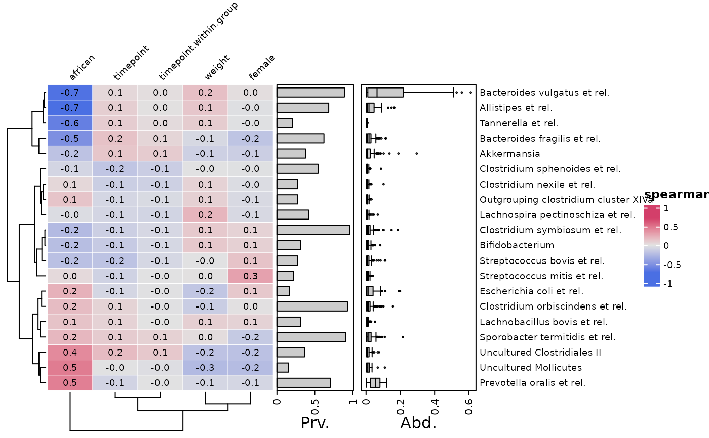
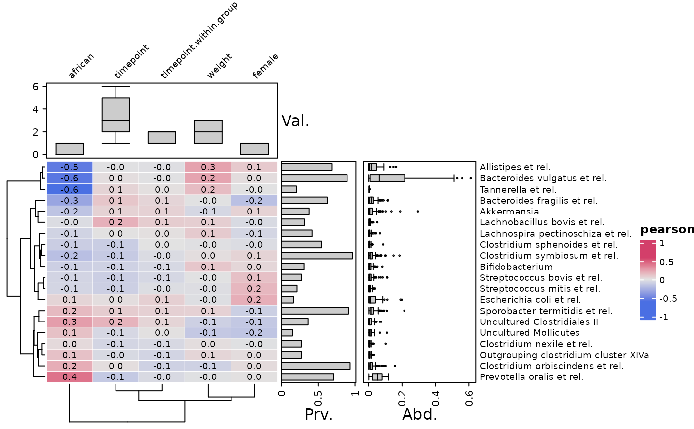
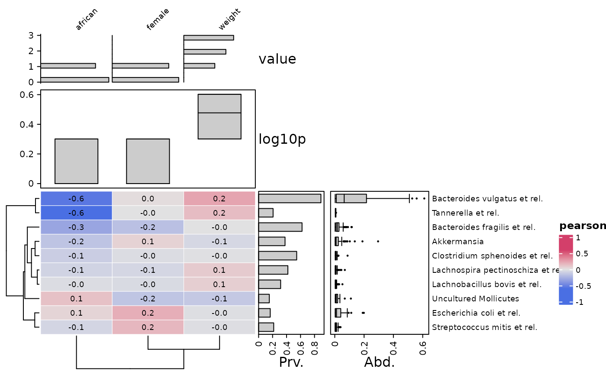
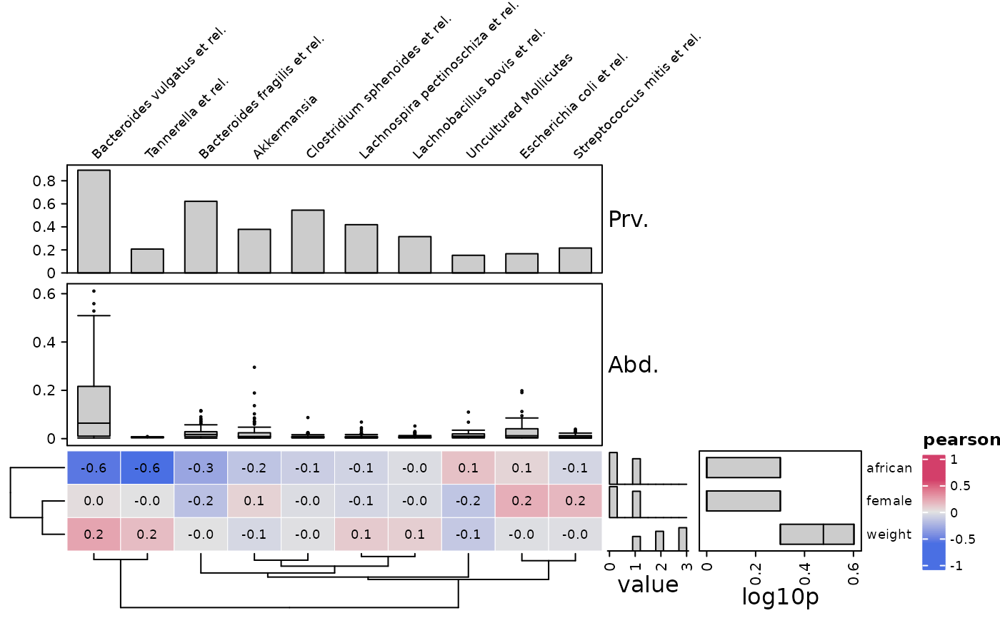
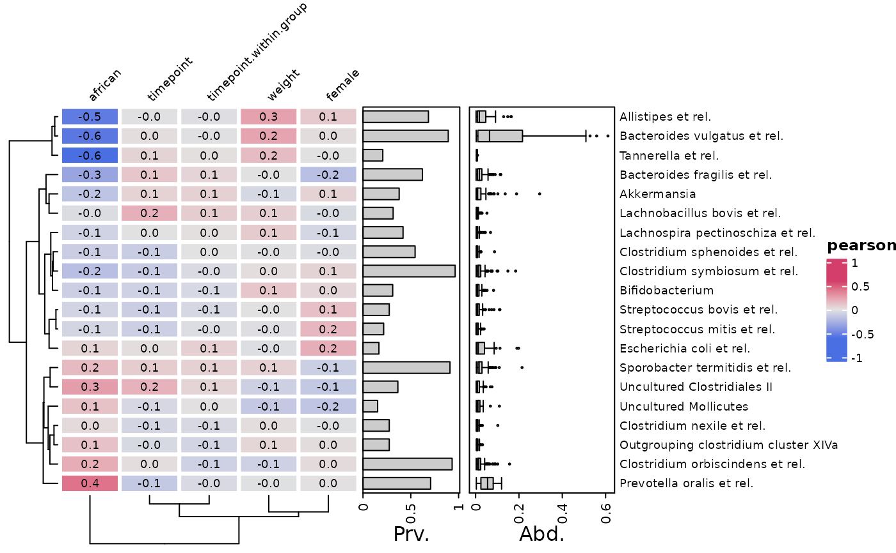

Plot correlations between (transformed) microbial abundances and (selected) numeric-like sample_data variables from a phyloseq object.
cor_heatmap( data, taxa = phyloseq::taxa_names(ps_get(data)), anno_tax = tax_anno(), vars = NA, anno_vars = NULL, cor = c("pearson", "kendall", "spearman")[1], cor_use = "everything", colors = heat_palette(palette = "Green-Orange", sym = TRUE), numbers = heat_numbers(), taxa_side = "right", seriation_method = "OLO_ward", seriation_dist = "euclidean", seriation_method_col = seriation_method, seriation_dist_col = seriation_dist, tax_transform = "identity", var_fun = "identity", gridlines = heat_grid(lwd = 0.5), ... )
Arguments
| data | phyloseq or phyloseq extra |
|---|---|
| taxa | list of taxa to include, or NA for all |
| anno_tax | optional annotation of taxa distributions: tax_anno() list output, or a pre-made ComplexHeatmap HeatmapAnnotation |
| vars | selection of variable names from sample_data |
| anno_vars | optional annotation of variable distributions: var_anno() list output, or a pre-made ComplexHeatmap HeatmapAnnotation |
| cor | correlation coefficient. pearson/kendall/spearman, can be abbreviated (used as legend title) |
| cor_use | passed to cor(use = cor_use) |
| colors | output of heat_palette() to set heatmap fill color scheme |
| numbers | output of heat_numbers() to draw numbers on heatmap cells |
| taxa_side | controls heatmap orientation and where any anno_tax annotations are placed (top/bottom/left/right) |
| seriation_method | method to order the rows (in seriation::seriate) |
| seriation_dist | distance to use in seriation_method (if needed) |
| seriation_method_col | method to order the columns (in seriation::seriate) |
| seriation_dist_col | distance to use in seriation_method_col (if needed) |
| tax_transform | transformation applied to otu_table before correlating (and BEFORE selection of taxa) |
| var_fun | character: name of a function to be applied (columns) to a matrix of vars before correlating (but not used in any variable annotations) |
| gridlines | list output of heat_grid() for setting gridline style |
| ... | extra args, for cor_heatmap passed to internal function viz_heatmap (for heat_numbers() dots are passed to grid::gpar for grid::grid.text) |
Details
Using a data.frame for the data argument is also possible, in which case the (selected) numeric-like variables will be correlated which each other, and all arguments relating to taxa will be ignored.
Examples
library(dplyr) data("dietswap", package = "microbiome") # create a couple of numerical variables to use psq <- dietswap %>% ps_mutate( weight = recode(bmi_group, obese = 3, overweight = 2, lean = 1), female = if_else(sex == "female", true = 1, false = 0), african = if_else(nationality == "AFR", true = 1, false = 0) ) psq <- tax_filter(ps = psq, min_prevalence = 1 / 10, min_sample_abundance = 1 / 10)#>psq <- tax_agg(psq, "Genus") # randomly select 30 taxa from the 50 most abundant taxa set.seed(123) taxa <- sample(microbiome::top_taxa(ps_get(psq))[1:50], size = 30) # make simple correlation heatmap with all numeric-like variables p <- cor_heatmap(psq, taxa, anno_tax = tax_anno(undetected = 50)) # NOTE: detection threshold set to 50 as HITchip example data seems to have background noise p# or with a selection of numeric-like variables cor_heatmap( psq, taxa, vars = c("african", "female", "weight"), anno_tax = tax_anno(undetected = 50) )# also with alternative correlation measures cor_heatmap(psq, taxa, cor = "spearman", anno_tax = tax_anno(undetected = 50))# annotating variables is possible, and easy with var_anno() which defaults to a boxplot cor_heatmap(psq, taxa, anno_vars = var_anno(), anno_tax = tax_anno(undetected = 50))# you can transform the variables before correlating by giving var_fun a function name # this does not affect the data used for annotations cor_heatmap( psq, taxa, anno_vars = var_anno(), anno_tax = tax_anno(undetected = 50), var_fun = "exp" )# other and multiple annotations cor_heatmap( psq, taxa, anno_tax = tax_anno(undetected = 50), anno_vars = var_anno( annos = c("var_hist", "var_box"), funs = list("identity", function(x) log10(x + 1)), names = c("x", "log10(x+1)"), rel_sizes = c(1, 2) ) )# optionally you can set the absolute width and height of the heatmap body manually p1 <- cor_heatmap(psq, taxa, anno_tax = tax_anno(undetected = 50), width = grid::unit(5, "cm"), height = grid::unit(15, "cm") ) p1# you can also change the annotation sizes p2 <- cor_heatmap(psq, taxa, anno_tax = tax_anno(undetected = 50, size = 45, rel_sizes = c(1, 2)), width = grid::unit(5, "cm"), height = grid::unit(15, "cm") ) p2# make the same correlation heatmap, but rotated p3 <- cor_heatmap(psq, taxa, taxa_side = "top", anno_tax = tax_anno(undetected = 50) ) p3# or rotated with taxa annotations at bottom p4 <- cor_heatmap(psq, taxa, taxa_side = "bottom", anno_tax = tax_anno(undetected = 50) ) p4# customising annotation styles is possible using the args argument in tax_anno or var_anno # but it is tricky: pass a list of lists, the inner lists are named to match the annotation type # this approach might be simplified/changed in future versions extra_args <- list(prev = list(gp = grid::gpar(fill = "white", lwd = 1), bar_width = 0.3)) cor_heatmap( psq, taxa, anno_tax = tax_anno(undetected = 50, prev = 1, abund = NA, args = extra_args) )extra_args2 <- list( var_hist = list(gp = grid::gpar(fill = "black", lwd = 1)), var_box = list(point_size = 3, box_width = 0.9) ) var_annotations <- var_anno(annos = c("var_hist", "var_box"), args = extra_args2) cor_heatmap(psq, taxa, anno_vars = var_annotations, anno_tax = tax_anno(undetected = 50))